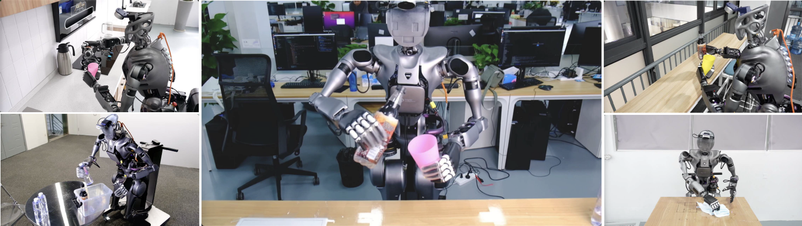

@inproceedings{
ze2025humanoid_manipulation,
title = {Generalizable Humanoid Manipulation with 3D Diffusion Policies},
author = {Yanjie Ze and Zixuan Chen and Wenhao Wang and Tianyi Chen and Xialin He and Ying Yuan and Xue Bin Peng and Jiajun Wu},
booktitle = {2025 IEEE/RSJ International Conference on Intelligent Robots and Systems (IROS)},
pages = {2873-2880},
year = {2025}
}